Polvo, gas molecular y nubes moleculares
Cuán vacío es el espacio (y cómo dimensionarlo), por qué el rojo no siempre significa frío, los dos efectos del polvo, dónde y cómo se forma el H₂, la química que parte del H₃⁺ y el CO como termómetro y trazador de las cunas estelares.
La clase pasada quedó pendiente la pieza clave del medio interestelar: el gas molecular. Esta clase cierra el cuadro. Primero pone en contexto la densidad del medio interestelar (¿qué significa “1 partícula por cm³”?), repasa el gas ionizado y el polvo, y luego entra de lleno en el hidrógeno molecular: dónde se forma (sobre los granos de polvo), por qué es casi imposible de observar, y cómo lo rastreamos indirectamente con el monóxido de carbono (CO), que además funciona como termómetro de las nubes donde nacen las estrellas.
¿Cuán vacío es el espacio? Moles y densidades
El aire de la sala es 10¹⁹ veces más denso que el medio interestelar.
La densidad promedio del medio interestelar es 1 partícula por centímetro cúbico. Los astrónomos hablan de densidad en partículas por volumen (no gramos por volumen) porque la mayoría de las partículas son átomos de hidrógeno. ¿Pero qué tan poco es eso? Para dimensionarlo, el profesor calcula la densidad del aire de la sala con un par de números de química básica:
- Un mol es una cantidad de cosas: unidades (el número de Avogadro). Es exactamente el mismo concepto que una “docena”, pero con un número gigante que solo tiene sentido al contar átomos o moléculas.
- A 25 °C y 1 atm, un mol de gas ocupa 22,4 litros = 22.400 cm³.
Si pudiéramos comprimir todo el disco gaseoso de la Vía Láctea (≈ 10⁹ masas solares de gas) hasta que tuviera la densidad del aire, quedaría una capa de unos 5 centímetros de grosor… extendida sobre los ~100.000 años luz del disco. Eso dice a la vez cuán difuso es el gas y cuán gigantesca es la galaxia.
El “cálculo mental” del profesor es aritmética en punto flotante con solo el exponente: quedarse con la mantisa aproximada y operar los exponentes (10²³ / 10⁴ = 10¹⁹). Es la misma disciplina de las estimaciones de Fermi o los back-of-the-envelope de diseño de sistemas: antes de calcular fino, ubicar el orden de magnitud para saber si algo es posible.
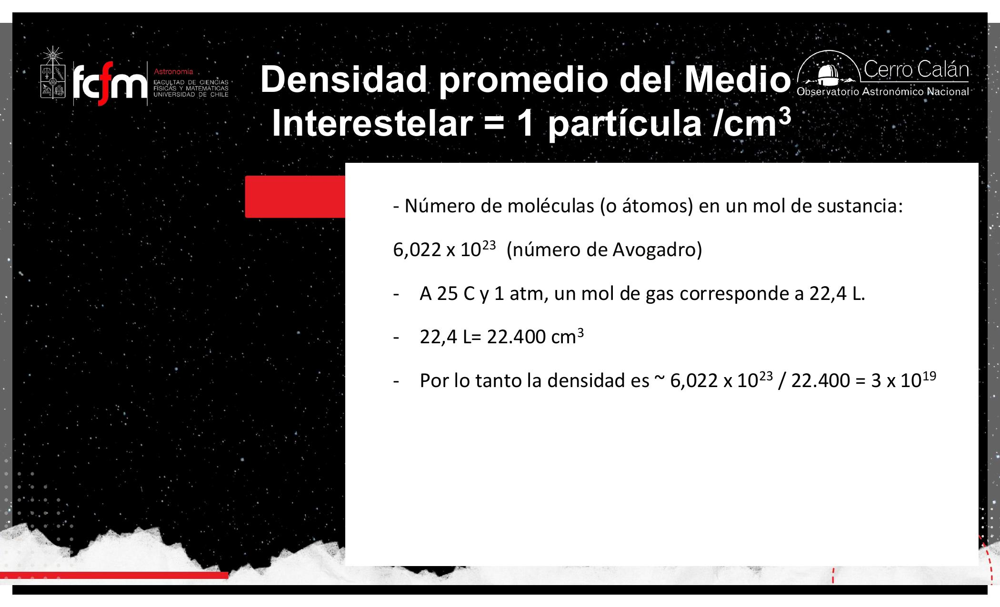
Repaso: hidrógeno neutro, ionización y Hα
Unir esta clase con la anterior en cinco minutos.
El medio interestelar tiene gas (sobre todo hidrógeno y helio) y polvo. La mayor parte del hidrógeno está hoy como hidrógeno neutro (HI): un protón con su electrón en el estado de menor energía, que casi no emite… salvo por el spin-flip que produce la línea de 21 cm, detectable con radiotelescopios. Con ella se mapea el hidrógeno y la estructura espiral de la Vía Láctea.
En regiones de formación estelar, parte de ese hidrógeno se fotoioniza: fotones ultravioleta (muy energéticos) le arrancan el electrón al átomo. Los electrones libres, atraídos eléctricamente, eventualmente se recombinan con los protones y caen “en cascada” por los niveles de energía del átomo, emitiendo un fotón en cada salto. La transición 3 → 2 (serie de Balmer) emite un fotón rojo: la línea Hα, la única de esas líneas que cae dentro de lo que ve nuestro ojo.
La Tierra orbita al Sol sin emitir nada. Un electrón no puede: tiene carga eléctrica, y al moverse en círculo su vector velocidad cambia de dirección continuamente ⇒ está acelerando. Maxwell mostró que una carga acelerada emite luz, es decir pierde energía, así que el electrón “planetario” colapsaría en espiral hacia el núcleo. La salida de Bohr: los electrones viven en niveles discretos de energía (n = 1, 2, 3…) y solo emiten o absorben al saltar entre ellos.
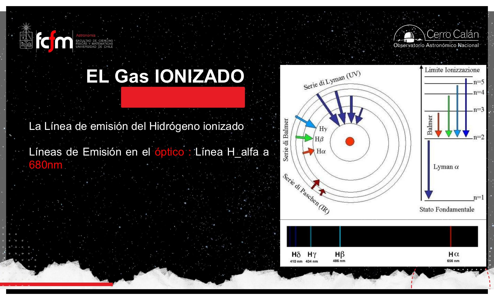
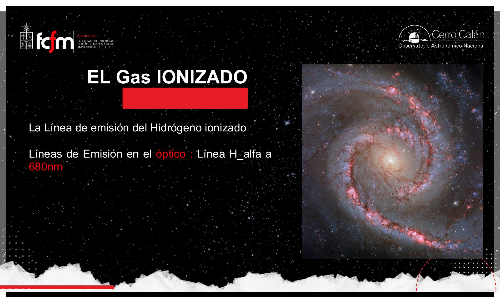
Se fabrican filtros que solo dejan pasar luz en torno a la línea Hα. Con ellos se observa el Sol sin quemarse la retina (pasa una fracción mínima de la luz, la del hidrógeno) y se ven llamaradas. Jamás mirar el Sol a simple vista, y menos con telescopio sin filtro.
Colores en una galaxia: estrellas vs. gas
El azul delata estrellas masivas; el rojo no siempre significa frío.
Azul = supergigantes = formación estelar reciente
En imágenes de galaxias, las zonas azuladas son estrellas jóvenes y masivas (no gas). Del diagrama HR sabemos que las estrellas rojas pueden ser supergigantes o enanas, pero las azules son todas supergigantes: muy grandes, muy masivas y muy calientes (≈ 20.000–30.000 K en superficie, frente a ~6.000 K del Sol y ~3.500–4.000 K de una estrella roja).
Y aquí entra el dato demoledor: mientras más masa, más corta la vida. No es lineal, es brutal:
- El Sol (1 M☉) vivirá ≈ 10.000 millones de años (hoy va por la mitad, ~4.500 millones).
- Con 10 M☉ viviría ≈ 15 millones de años: ¡mil veces menos! Ni siquiera alcanzarían a formarse bien los planetas (eso toma ~10 millones de años).
- Con 20–30 M☉, apenas un par de millones de años.
Por eso, donde hay estrellas azules hay formación estelar reciente: esas estrellas no viven lo suficiente para alejarse de su lugar de nacimiento.
Cuando la luz viene de una estrella (emisión continua de cuerpo negro), el color sí mapea temperatura: rojo ≈ 3.500–4.000 K, amarillo ≈ 6.000 K, azul ≈ 20.000–30.000 K. Pero el rojo de las regiones HII no es emisión continua: es una línea (Hα) producida por las transiciones del electrón. Ese gas está caliente (ionizado por estrellas azules), y aun así brilla rojo. El color de una línea de emisión se desacopla de la temperatura.
Es la diferencia entre inferir un parámetro desde un espectro continuo (como estimar temperatura desde la forma completa de una distribución) y desde una delta concentrada en una frecuencia fija (un tono puro cuya frecuencia la fija el “hardware” del átomo, no el estado térmico). Interpretar la línea con la lógica del continuo es aplicar el modelo equivocado a la señal.
Todo objeto con temperatura emite radiación. Nosotros, a ~310 K, tenemos el pico de emisión en el infrarrojo (por eso funcionan las cámaras térmicas). Las estrellas, entre ~4.000 y ~30.000 K, tienen su pico entre el IR cercano y el UV.
El polvo: extinguir y enrojecer
El smog de la galaxia: 1% de la masa, pero domina lo que (no) vemos.
El polvo interestelar es material particulado, como el smog de Santiago o Temuco en invierno: alrededor del 1% de la masa del medio interestelar (1 kilo de cada 100). Son granos sólidos de entre 1 nm y ~10 µm compuestos de grafito, carburo de silicio (SiC), silicatos y óxidos de silicio; en su superficie puede acumularse hielo de agua y moléculas como H₂.
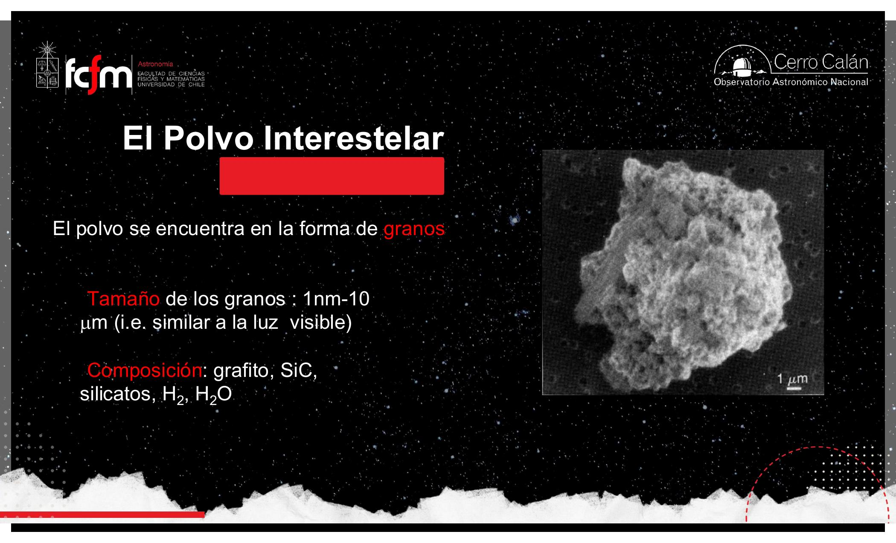
Para que un grano “vea” a una onda, la longitud de onda debe ser comparable o menor que el grano. Las ondas cortas (azul) chocan con los granos y son absorbidas o dispersadas; las largas (rojo, y más aún infrarrojo y radio) “pasan de largo” sin notar el grano. Si tan poco polvo bloquea tanto, es porque es extremadamente eficiente absorbiendo en el óptico, igual que una capa fina de smog tapa la cordillera.
Los dos efectos que todo astrónomo óptico debe corregir
- Extinción: el polvo reduce la intensidad de la luz que lo atraviesa. De cada 100 fotones que debían llegar, una fracción importante no llega: el objeto se ve más tenue.
- Enrojecimiento: como el azul se absorbe/dispersa con preferencia, la luz que sí pasa queda más roja de lo que era. Si no sabes que hay polvo en el camino, inferirás que la estrella es más fría de lo que realmente es.
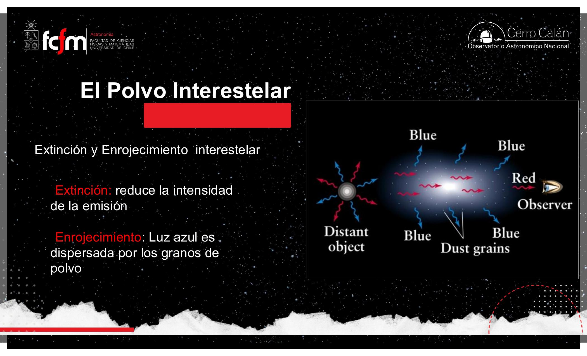
Hasta ~1900, muchos mapas ponían al Sol al centro de la Vía Láctea. ¿Por qué? Hay mucho polvo hacia el centro galáctico: la vista se tapa a una distancia similar en todas direcciones, y parece que estamos al medio. Es como pararse en Cerro Calán un día de smog: se ve igual de poco hacia todos lados y uno concluiría que está al centro de Santiago. Sin corregir el sesgo del polvo, la conclusión sale mal.
¿Cómo se corrige? Espectros
Las líneas de absorción del espectro de una estrella casi no son afectadas por el polvo, y el tipo de líneas presentes depende de la temperatura (clasificación espectral). Entonces: el espectro me da la temperatura real; el color me da una temperatura aparente. Si el espectro dice 6.000 K pero el color dice 5.000 K, la diferencia mide cuánto polvo hay en el camino y permite corregir la extinción.
El polvo es un filtro pasa-bajos dependiente de frecuencia aplicado a la señal estelar. Las líneas espectrales son features robustas al filtro (su posición no cambia), así que sirven de ground truth para estimar la función de transferencia del canal y “des-enrojecer” los datos — como calibrar un sensor con una señal de referencia conocida.
El polvo emite (en IR lejano) y también se destruye
Lo que absorbe lo devuelve como calor; y los rayos cósmicos lo erosionan.
Un mapa del polvo: el infrarrojo lejano
Al absorber luz, el polvo se calienta — no a miles de grados como una estrella, sino a temperaturas de equilibrio de 100–300 K (parecidas a la nuestra). Y a esas temperaturas brilla intensamente en el infrarrojo lejano. Históricamente no podíamos verlo (ni el ojo ni las placas fotográficas son sensibles al IR); la tecnología infrarroja surgió como tecnología militar (sensores de misiles) y luego pasó a la astronomía. Satélites infrarrojos mapearon todo el cielo en IR lejano: en la práctica, un mapa del polvo de la Vía Láctea.
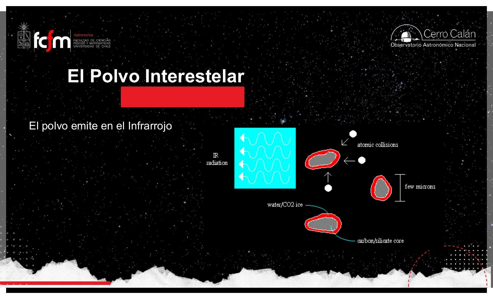
El IR cercano está pegado al óptico: es donde observa el James Webb, y es luz típica de cuerpos a ~3.500 K. Atraviesa el polvo mucho mejor que el óptico, por eso el JWST “se hace el polvo” y ve a través de las nubes. El IR lejano, cerca de las microondas, es donde emite el propio polvo (y nosotros, a ~300 K). Las estrellas casi no emiten IR lejano, así que en esa banda el cielo se oscurece y brilla el polvo. Distintas bandas ⇒ distintos instrumentos ⇒ distintos objetos visibles.
Sputtering: el polvo no es eterno
Por el medio interestelar viajan rayos cósmicos: partículas cargadas (electrones, protones y partículas alfa —núcleos de helio—) a altísima velocidad, que se cree se aceleran en explosiones de supernova y viajan siguiendo líneas de campo magnético. Cuando chocan con un grano de polvo, lo pueden partir. Lo mismo hacen fotones muy energéticos (UV, rayos X). Esa erosión se llama sputtering: por eso los granos sobreviven sobre todo en los núcleos fríos y densos de las nubes moleculares, protegidos de la radiación.
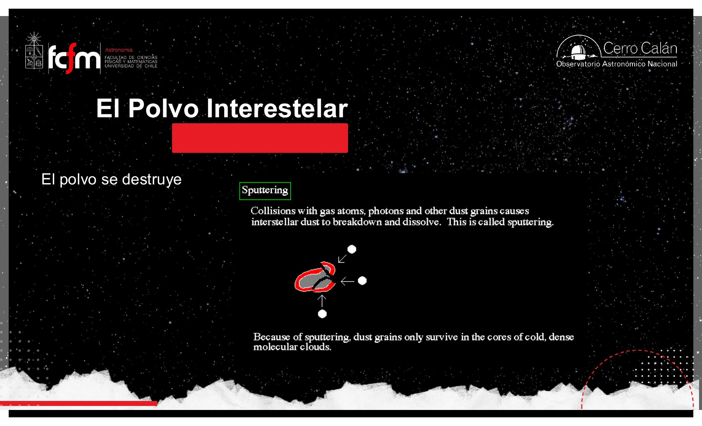
El polvo “vive” en las galaxias como el material particulado vive en las ciudades. ¿Quién lo produce? En la ciudad, la actividad humana; en la galaxia, las estrellas, que fabrican el carbono, silicio y oxígeno del que están hechos los granos.
Hidrógeno molecular: nacido sobre el polvo
La molécula más abundante del universo es también la más invisible.
El componente clave para la formación estelar es el gas molecular. El helio no participa: es un gas noble, químicamente inerte, vive siempre como átomo solitario (≈ 25% de la masa del gas). El hidrógeno, en cambio, “prefiere” unirse con otro hidrógeno y formar H₂… si las condiciones lo permiten.
El problema: encontrarse
Para que haya reacciones químicas las partículas tienen que encontrarse. En el aire (10¹⁹ partículas/cm³) eso pasa todo el rato; en el medio interestelar (1 partícula/cm³), prácticamente nunca: el hidrógeno se queda atómico. En las nubes moleculares la densidad sube a ~10³ partículas/cm³ — todavía un vacío absurdo para estándares terrestres, pero mil veces el promedio interestelar — y la temperatura baja. Ahí el H₂ se vuelve posible.
Formar una molécula es como querer tomarse de la mano con alguien que viene corriendo en dirección contraria: si ambos van a 50 km/h, no hay manera. Hay que moverse despacio uno respecto del otro. En química, “moverse despacio” = baja temperatura. Por eso el frío favorece las moléculas, y el calor las rompe (las separa o impide que se formen).
El catalizador: la superficie del grano de polvo
Incluso a 10³ partículas/cm³ la densidad es demasiado baja para que dos átomos de H se encuentren en el gas. Lo que ocurre en realidad: un átomo de hidrógeno se posa sobre un grano de polvo (atraído eléctricamente por zonas más positivas del grano) y se queda quieto. Llega otro hidrógeno, los electrones de cada átomo sienten la atracción del núcleo del otro, y se forma la molécula. Al formarse, el sistema cae a un estado de menor energía y la diferencia se libera — y esa misma energía liberada despega a la molécula del grano y la devuelve al gas.
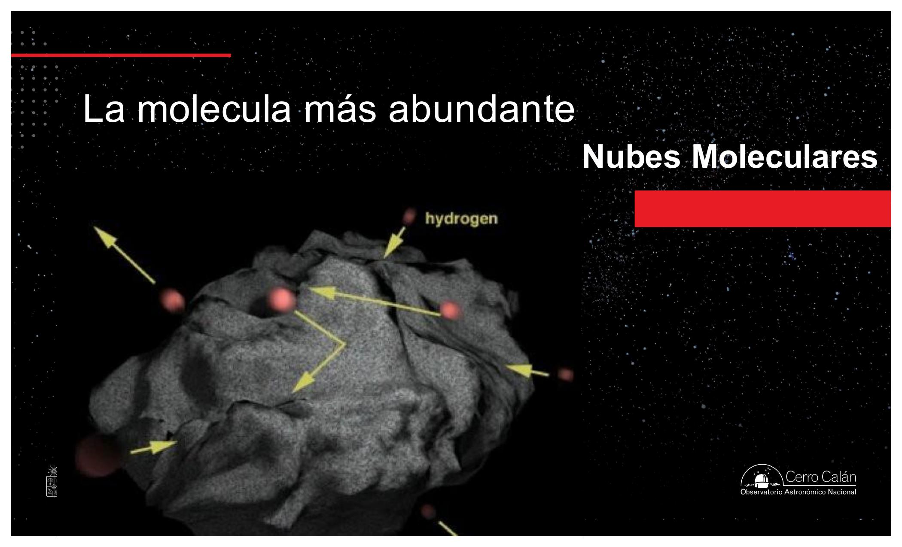
La maldición observacional del H₂
El hidrógeno molecular frío es casi imposible de observar: no tiene líneas de emisión ni absorción en longitudes de onda visibles o de radio. Es transparente total. (El HI también es difícil, pero al menos tiene la línea de 21 cm.) ¿Por qué? Lo veremos en la sección 8: al ser dos átomos idénticos, la molécula no tiene momento dipolar, y sus rotaciones y vibraciones no producen radiación. Se puede ver en absorción en el UV, pero donde hay UV hace calor… y donde hace calor el H₂ no sobrevive. Callejón sin salida: donde el H₂ puede vivir, no emite nada.
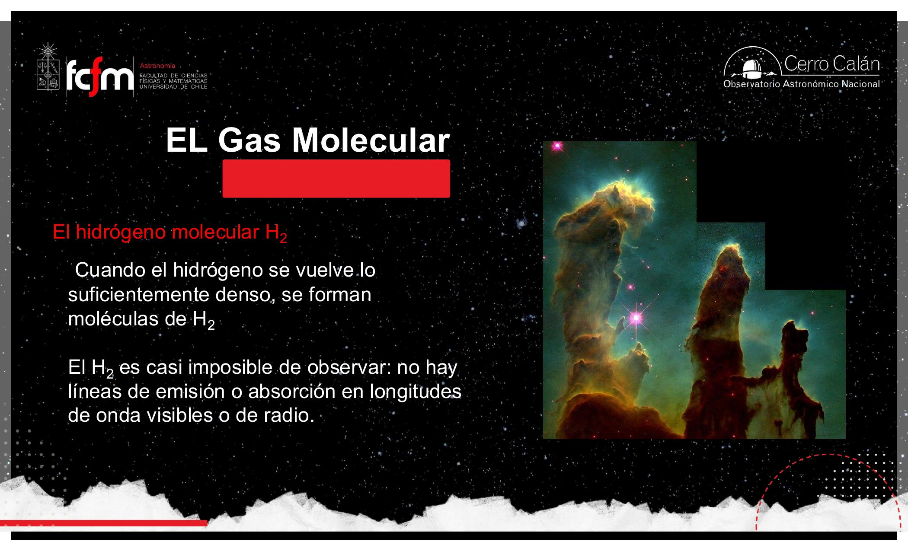
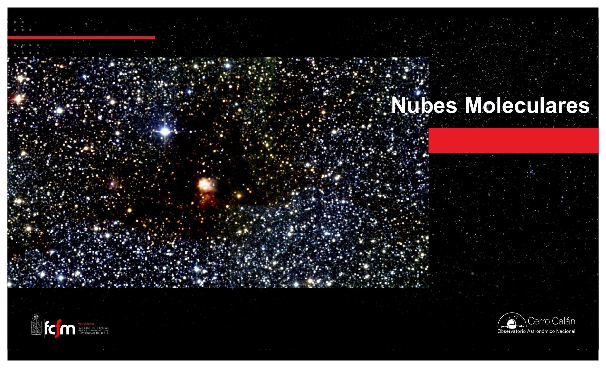
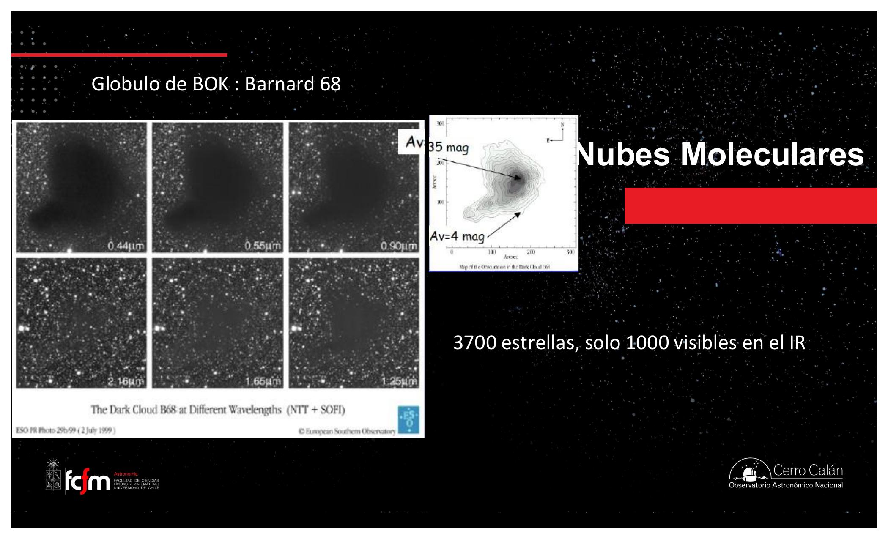
La formación de H₂ en granos es un problema de rendezvous: dos agentes en un espacio enorme casi nunca coinciden (encuentro en el gas ≈ O(n²) con n minúsculo). El grano de polvo funciona como una cola de mensajes: un átomo se “estaciona” y espera; el encuentro pasa de improbable a garantizado. Catalizador = punto de sincronización.
H₃⁺ y la química del universo
Del hidrógeno molecular al agua, el metano, el amoníaco… y la vida.
Prácticamente toda la química del universo se apoya en el hidrógeno molecular. Pero el H₂ por sí solo no basta: necesita protonarse. Los rayos cósmicos y los fotones UV tienen energía suficiente para ionizar el H₂, y se desencadena:
Esas cadenas de protonación construyen las moléculas que conocemos:
- Con carbono → CH, CH₂, … hasta metano (CH₄) e hidrocarburos.
- Con oxígeno → agua (H₂O).
- Con CO → ácidos; con nitrógeno → amoníaco (NH₃).
- Aminas + ácidos → aminoácidos: los ladrillos de la “sopa” prebiótica.
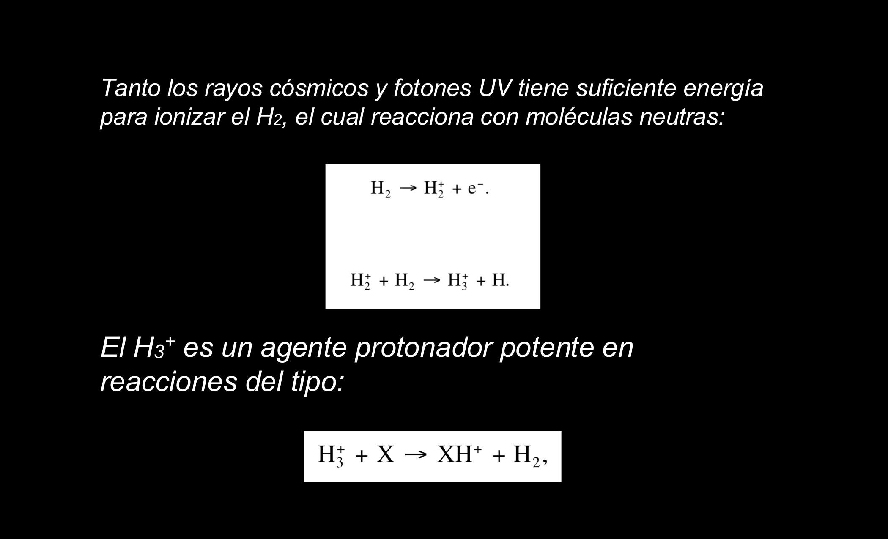
Después del H y el He, los elementos más abundantes del universo son oxígeno, carbono y nitrógeno. Nosotros estamos hechos exactamente de eso: agua (H, O), lípidos y proteínas (C, N). Somos lo más abundante del universo que puede reaccionar — el helio queda fuera por inerte. El gas del medio interestelar es ≈ 98% H+He y ≈ 2% el resto; de ese 2%, la mitad está condensada en polvo.
Pregunta de un estudiante: ¿el helio no reacciona en la cadena protón-protón? Sí, pero eso es una reacción nuclear: se transforman los núcleos (alquimia estelar). En una reacción química el núcleo no se toca: son los electrones los que se comparten o intercambian. El helio es inerte químicamente, aunque participe en la fusión nuclear dentro de las estrellas.
CO: el trazador y termómetro de las nubes
Cómo ver lo invisible y medir temperatura sin termómetro.
¿Por qué el CO sí emite y el H₂ no? El momento dipolar
Una molécula puede rotar y vibrar, y al cambiar de estado rotacional/vibracional puede emitir o absorber fotones — pero solo si tiene momento dipolar: una separación permanente de carga. En el CO, el oxígeno atrae los electrones compartidos con más fuerza que el carbono, así que el lado del O queda con carga negativa permanente y el del C positiva. En el H₂, los dos átomos son idénticos: nadie “gana” los electrones, no hay dipolo, y sus rotaciones no producen radiación.
Compartir electrones entre O y C es como una tele compartida entre un hermano de 15 y uno de 5: la tele es “de los dos”, pero el grande la acapara. El oxígeno es el hermano mayor. En el H₂ son dos quinceañeros idénticos: se reparten la tele por igual y no hay asimetría — no hay dipolo, no hay emisión.
Las condiciones donde se forma H₂ son muy similares a las que forman CO, así que siempre andan juntos: aproximadamente 1 molécula de CO por cada ~10⁵ de H₂ en nuestra galaxia. El CO sí se observa en radio. Conclusión operativa: donde veo CO, hay H₂. Con radiotelescopios se mapea el CO a gran escala y eso es, en la práctica, el mapa del gas molecular de la Vía Láctea.

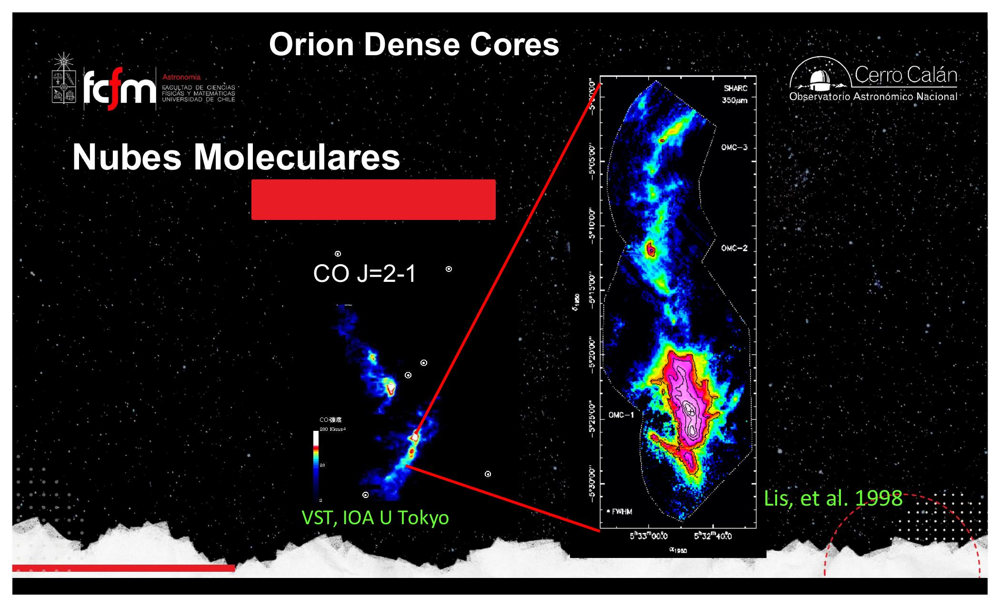
Transiciones rotacionales: la escalera J
Así como el átomo de hidrógeno tiene niveles n, las moléculas tienen niveles rotacionales J. Lo notable es la escala de energías: la transición más baja del CO corresponde a apenas 5,5 K (≈ 4,7×10⁻⁴ eV). Estas excitaciones no se producen absorbiendo fotones sino por choques entre moléculas dentro de la nube (que actúa como escudo de la luz externa); la intensidad de los choques depende de la temperatura del gas.
| Transición | ΔE (en kelvin) | Frecuencia ν | λ |
|---|---|---|---|
| J = 1→0 | 5,5 K | 115,272 GHz | 2,7 mm |
| J = 2→1 | 11,0 K | 230,544 GHz | 1,3 mm |
| J = 3→2 | 16,5 K | 345,816 GHz | 0,87 mm |
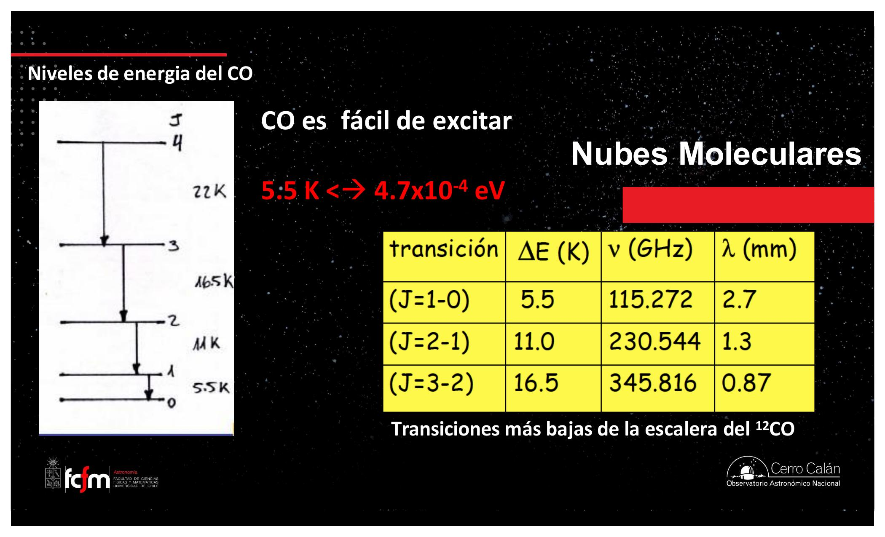
Para excitar el nivel J=1 se necesitan al menos ~5,5 K; para J=2, ~11 K; y así subiendo. Entonces, qué transiciones se observan (y sus intensidades relativas) revela la temperatura de la nube. ¿Cómo saben los astrónomos que una nube está a 20 K sin ponerle termómetro? Porque ven la transición 4→3 pero no la 5→4, por ejemplo. La región del espectro donde aparecen las líneas sigue la T de la nube (Tex = Trot).
Es inferencia de un parámetro oculto por niveles cuantizados: la temperatura no se mide directo, se deduce de qué “bits” del sistema alcanzaron a activarse — como estimar la carga de un servidor mirando qué niveles de una jerarquía de caché/colas se están usando. Además el CO es un proxy del H₂ (1:10⁵): medimos la variable observable y escalamos por el factor de conversión, con todas las precauciones que un proxy implica.
El zoológico de nubes moleculares
De nubes traslúcidas a grumos y hot cores: donde nacen las estrellas.
Las nubes moleculares importan porque ahí nacen las estrellas — el “???” al inicio del diagrama de vida estelar. Por mucho tiempo fue la etapa peor entendida: el polvo impedía mirar adentro con telescopios ópticos. Solo con los radiotelescopios (desde fines de los 50, con fuerza desde los 70, y hoy con ALMA en el rango submilimétrico) pudimos ver el interior de las cunas estelares.
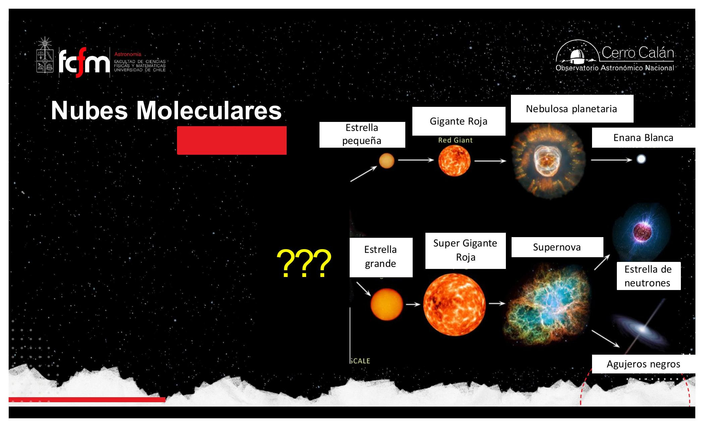
Según densidad, temperatura y masa, las nubes se clasifican (valores de las diapositivas):
| Tipo | T | Densidad | Masa | Tamaño |
|---|---|---|---|---|
| Nubes traslúcidas | 15–50 K | ~5×10⁸–5×10⁹ m⁻³ | 3–100 M☉ | 1–10 pc (AV ~ 1–5) |
| Nubes moleculares gigantes (NMG/GMC) | ~10–30 K | ~10²–10³ cm⁻³ | 10³–10⁶ M☉ | ~50 pc |
| Grumos (clumps) en NMG | 100–200 K | ~10¹³–3×10¹⁵ m⁻³ | 10–1000 M☉ | <1 pc (AV ~ 50–1000) |
| Hot cores | cientos de K | <10⁸ cm⁻³ | 50–10³ M☉ | interior de GMCs |
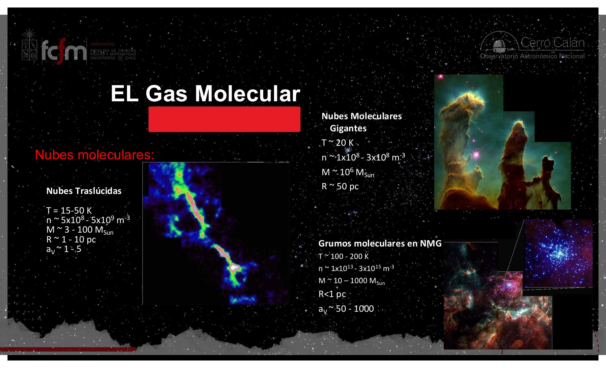
Masa 10⁴–10⁶ M☉, densidad >100 cm⁻³, T ≈ 10–30 K, estructura grumosa y filamentaria, con núcleos densos de n > 10⁶ cm⁻³. Se descubrieron con exploraciones de CO y llevan nombres de regiones con estrellas jóvenes (Orión, M17, Sgr B2, W49…). Viven < 10⁸ años: probablemente las destruye la radiación UV y los vientos de las estrellas masivas que se forman en su interior — la nube fabrica a sus propias destructoras. (Las diapositivas indican campos magnéticos de “10–20 Gauss”; los valores típicos en la literatura para estas nubes son del orden de 10–20 µGauss.)
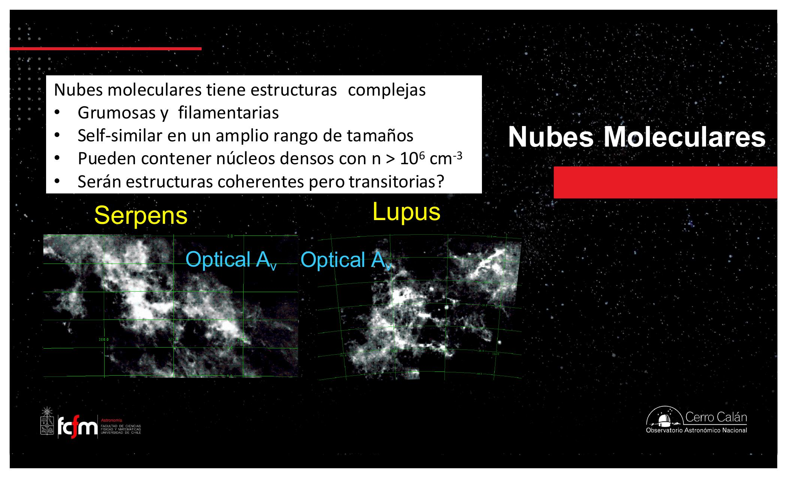
El profesor retomará las transiciones moleculares como termómetro al comienzo de la próxima clase, y seguirá con la formación estelar dentro de los núcleos densos. Quedarse con la idea: así como el hidrógeno tiene sus transiciones (Hα entre ellas), las moléculas tienen las suyas en radio, y de ellas se extraen temperaturas, densidades y masas de las nubes.
Conceptos clave
Tabla de repaso rápido.
| Concepto | Qué es / valor | Por qué importa |
|---|---|---|
| Densidad del ISM | 1 partícula/cm³ (aire: ~3×10¹⁹) | 19 órdenes de magnitud: el espacio es un vacío extremo |
| Mol / Avogadro | 6,022×10²³ unidades; 22,4 L por mol de gas | Como una “docena” gigante; permite calcular densidades |
| Hα | Transición 3→2 del H; ≈ 656 nm (rojo) | Única línea de recombinación visible al ojo; traza regiones HII |
| Rojo ≠ frío | Continuo de cuerpo negro: color ↔ T; línea de emisión: no | El rojo de las regiones HII viene de gas caliente |
| Estrellas azules | Supergigantes, 20.000–30.000 K, vida de millones de años | Delatan formación estelar reciente; su UV ioniza el gas |
| Masa vs. vida | 1 M☉ → ~10¹⁰ años; 10 M☉ → ~1,5×10⁷ años | Más masa ⇒ vida mucho más corta (no lineal) |
| Polvo | Granos 1 nm–10 µm; grafito, SiC, silicatos; ~1% masa ISM | Extinción + enrojecimiento; bloquea el óptico |
| Extinción / enrojecimiento | Menos fotones / proporcionalmente más rojos | Sesgos a corregir; espectros dan la T real |
| Polvo emite en IR lejano | Se calienta a 100–300 K | Satélites IR mapearon el polvo de toda la galaxia |
| IR cercano vs. lejano | Cercano: JWST, atraviesa polvo. Lejano: emite el polvo | El “apellido” del infrarrojo cambia qué se ve |
| Sputtering | Destrucción de granos por rayos cósmicos / fotones | El polvo sobrevive en núcleos fríos y densos |
| H₂ | Se forma sobre granos de polvo; frío y denso (~10³ cm⁻³) | Materia prima estelar; sin momento dipolar ⇒ invisible |
| H₃⁺ | H₂ ionizado por rayos cósmicos/UV + H₂ | Agente protonador: activa la química (H₂O, CH₄, NH₃…) |
| CO | ~1 CO por 10⁵ H₂; momento dipolar; emite en mm | Trazador del gas molecular invisible |
| Escalera J del CO | 1→0: 5,5 K · 115 GHz; 2→1: 11 K; 3→2: 16,5 K | Termómetro de nubes por choques (Tex=Trot) |
| Nubes moleculares | Frías (10–50 K), 10²–10³ cm⁻³, hasta 10⁶ M☉ | El sitio de la formación estelar |
Exámenes de práctica
10 exámenes de 5 preguntas (3 de alternativas autocorregibles + 2 de respuesta escrita).